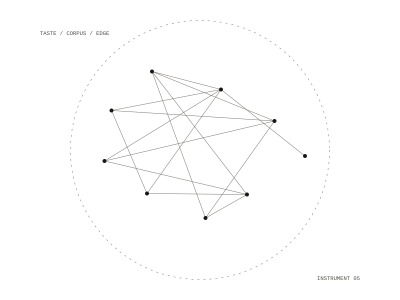

Recommender
A cross-domain recommender: one taste model, many corpora. Music, art, film, text and people are ranked against a single taste profile written by a person, and the edges between domains, such as a film that rhymes with a herbal preoccupation or a musician who shares an apparatus with a filmmaker, are the point of the system.

The taste profile
The profile is the source of truth and is written by hand. The pipeline may propose additions; only a person commits them. The first taste file is a hand-written list of about fifty films, grouped by axis: ecological, plant and land; material, texture and colour; apparatus and machine vision; ritual, occult and non-human perception.
The rules
The design sets six rules; four of them are:
- Every recommendation must carry where it came from, when it was retrieved, and why it was ranked.
- Ranking is to be done by deterministic, tested code; the model writes the rationale and never the number.
- An edge between domains needs a stated basis (a shared artist, a cited influence, a documented lineage, or co-occurrence in a corpus), and edges without one are to be dropped.
- Every recommendation and every accept or reject is to be a new timestamped entry in an append-only ledger.
Local by default
Embedding a whole corpus, and re-embedding on every ingest, is most of the work, which is where a local model costs least. A taste profile with a reading, listening and viewing history is about as identifying as a document gets, so it stays on the machine, and pinned local weights keep the ranking reproducible. Everything is meant to run in containers; the host needs only Docker, Make and git.
music, art, film, text, people
Docker on your own machine, with local open-weight models